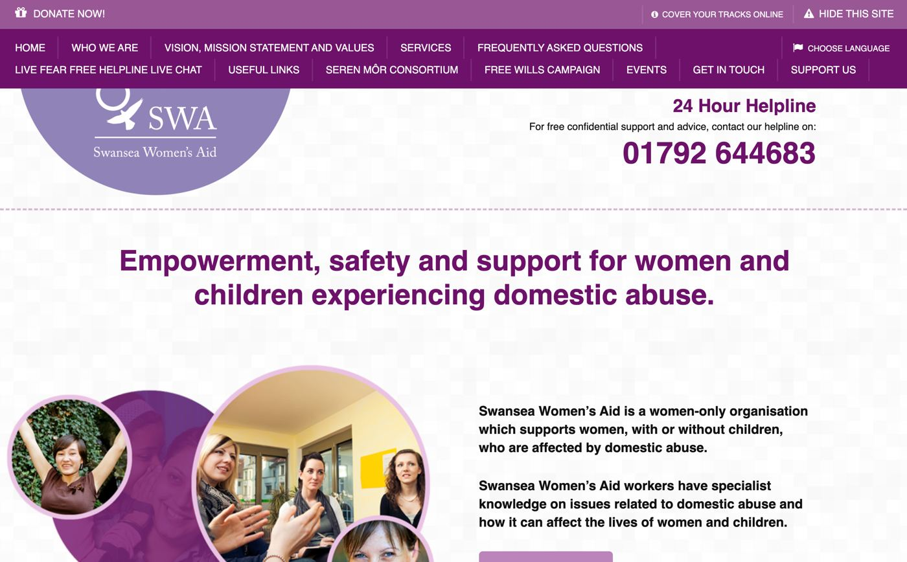
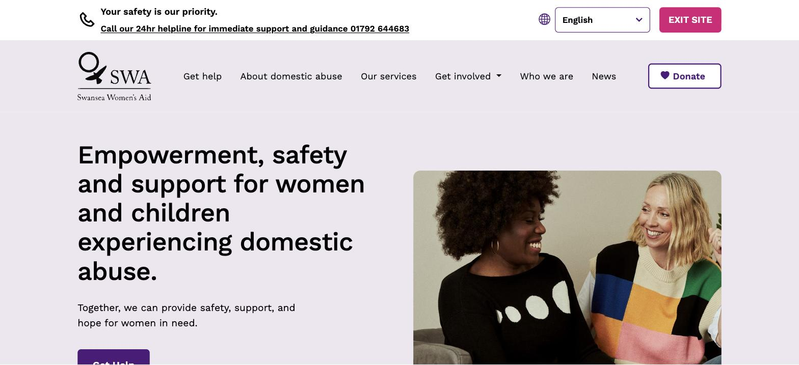
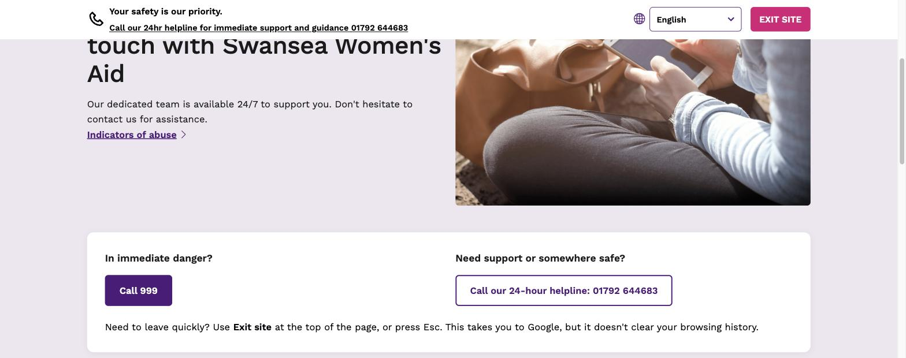
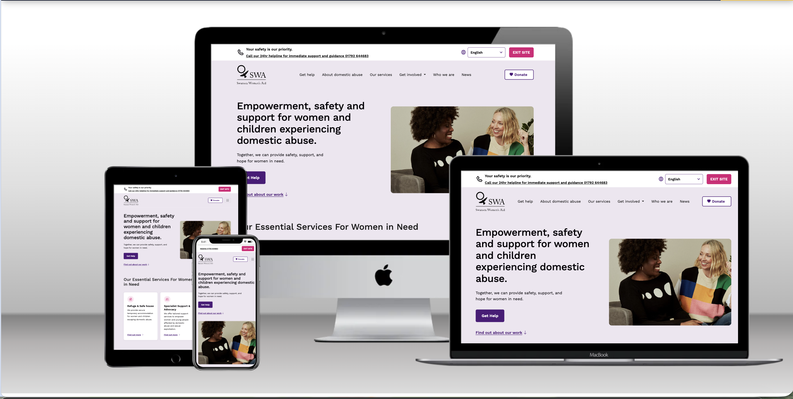
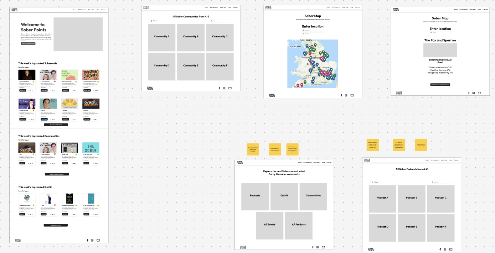
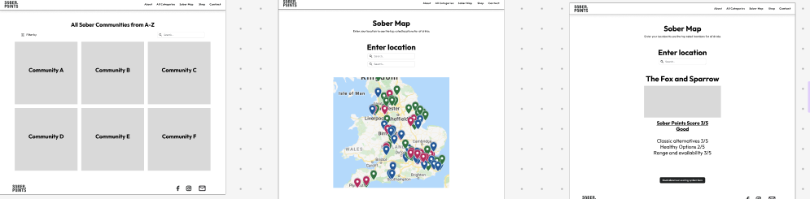
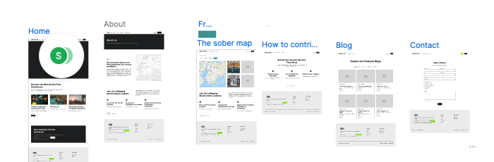
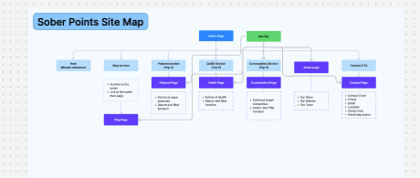

A charity site rebuilt around people in crisis, and a product I founded and designed from scratch, end to end.
Case study·● Live site
A full website redesign for a local domestic abuse charity, built around three different audiences with very different needs, and very different amounts of time to find what they're looking for.


Swansea Women's Aid needed a site that worked harder for three audiences at once: women seeking help, often in a moment of crisis; donors and funders; and people looking to volunteer. Staff also needed to be able to post news and updates themselves, without relying on a developer.
I ran a stakeholder interview with the charity's team to understand their goals, then carried out user research (including interviews I commissioned through an external research partner) to understand real barriers. I also benchmarked the experience against Refuge's national site to see how a well-resourced organisation in the same space structured crisis messaging and support pathways.
Navigation was rebuilt around the three priority audiences, with crisis support first. A visible "quick exit" safety feature was made prominent rather than buried, and a plain-language section on recognising abuse was added to reduce confusion. Staff login moved to the footer to keep the main site focused on visitors, sitting on top of a lightweight CMS so the team could publish news and events without developer help.
The research and redesign fed directly into the charity's production site, live today at swanseawomensaid.com, structured around what someone actually needs in the moment they land on it: support first, then ways to give or get involved.
● Updated September 2026
The original site had been rebuilt in a hurry after the charity lost content to an accidental deletion, so parts of it were never quite finished. Once I took over development directly, I went back through the whole site: fixing what hadn't been properly rebuilt, tightening the design, reorganising key journeys, and working through a full accessibility pass, all while keeping the charity's existing branding and tone.
Safety features only work if they're genuinely usable under pressure. The exit button now stays visible at the top of the screen as the page scrolls, responds to the Esc key, and can't be undone with the browser's Back button. The helpline number is tappable to call directly on a phone, and the Get help page leads with two unambiguous actions rather than a paragraph to read through first.

The main menu now opens with Get help, followed by plain-English service names, like "Children and young people" rather than the internal acronym CHYPS, each with its own page for volunteering, vacancies and complaints. I also brought the font, spacing, buttons and cards in line across the whole site, and compressed every photo so pages load noticeably faster on mobile, where most visitors land first.

I also worked through a full WCAG 2.2 AA pass — contrast, heading structure, keyboard access, focus outlines, touch target sizing and screen reader labels — and brought back a language menu covering Welsh and the most commonly spoken community languages. Behind the scenes, the CMS now has clearer fields for staff, and the Get involved form saves to the CMS and emails the team directly, instead of failing silently.
Case study·● App submitted to App Store
Product design · UX research · Interaction design · Prototyping · Usability testing · Product analytics
Sober Points is a discovery platform designed to help people find places where choosing not to drink doesn't mean compromising on the experience. I founded Sober Points after recognising a gap in traditional venue discovery: a restaurant, pub or bar might technically offer an alcohol-free option, but that doesn't necessarily make it a good experience for someone who isn't drinking. I led the product and UX design from early research and concept development through to the live web platform and native app.
Finding somewhere to eat or socialise is easy. Finding somewhere that's genuinely good when you're not drinking is harder. Information about alcohol-free options is often incomplete, buried within menus or unavailable until you arrive. Existing discovery platforms weren't designed around this need.
The initial question was: how might we make it easier for people to discover places where they can have a genuinely good experience without alcohol? But I deliberately didn't jump straight to a venue-finding app. Early Sober Points concepts explored a much broader ecosystem around sober living, including communities, podcasts, events, products and places.

I carried out user research to understand how people currently discovered sober-friendly experiences, what information they needed and where existing services fell short. Rather than testing a predetermined solution, I used early concepts to explore which parts of the proposition were most useful and how people expected the service to work. Research informed both the content of the service and its structure, and helped me progressively narrow what was initially a very broad proposition.
Early wireframes explored several potential areas of the service, including sober communities, curated content, podcasts, products, events and a location-based map, present from an early stage so users could enter a location and explore sober-friendly options nearby. These weren't polished interfaces; they let me test the structure and value of different parts of the proposition before investing in detailed design and development.

As the concept developed, I mapped the wider service — homepage, Sober Map, contribution journeys, content, contact and supporting communications — rather than designing individual screens in isolation, to think beyond individual screens and consider how someone might move from discovering Sober Points to finding somewhere suitable, and how the community could contribute information back into the platform.


Through research, prototyping and iteration, Sober Points evolved from the broader content and community concept into a much more focused proposition: help me find somewhere good to go when I'm not drinking. That meant designing around a different set of questions: what's near me, is it suitable, what alcohol-free options does it actually have, and can I trust the information? So the map and venue experience progressively reveals information rather than making users investigate every venue individually — searching by location, filtering results, and opening a venue profile with imagery, alcohol-free options, attributes and community reviews for more context before deciding where to go.
One of the challenges was that Sober Points wasn't simply a consumer interface: the usefulness of the product depends on the quality of the venue information behind it. I therefore designed contribution and moderation journeys alongside the discovery experience, allowing information to be added and updated while maintaining control over what appeared publicly. Venue owners can also claim their listings, creating a route towards more accurate, owner-verified information.
Launching wasn't the end of the design process. I instrumented the live experience with product analytics to understand how people actually use Sober Points — discovering, searching, interacting with venues — rather than relying solely on what people said during research, and used those patterns alongside qualitative research to identify friction and prioritise what to fix next. Because this is commercially sensitive product data, I don't publish the underlying figures.
Real usage has continued to expose problems that weren't obvious in the original interface. For example, venue types and venue attributes don't always belong at the same level: a restaurant, pub or shop describes what a place is, while something such as alcohol-free beer on draught describes what it offers. As the dataset grew, treating both as equivalent filters risked a confusing hierarchy, so I separated venue type from more specific attributes and made the active state explicit within the results — a small change, but one that shows how the information architecture has to evolve as the product and its data get more complex.
As Sober Points developed, I also translated the experience into a native mobile application. This wasn't simply a visual port of the website: mobile introduced different interaction considerations around map behaviour, navigation, authentication, saved venues and returning to the app through deep links.
Sober Points progressed from exploratory wireframes and user research into a live product with hundreds of sober-friendly venues and real users searching, discovering and interacting with venue information. Building my own product meant working beyond a conventional design handoff: I've had to make decisions about user needs, technical constraints, data quality, moderation, analytics and commercial viability, then see how those decisions perform with real users through an ongoing loop of research, design, build, measure and iterate. The biggest lesson has been that good product design doesn't end at launch — some of the most useful design questions have appeared once the service held more venues, data and functionality than the original prototypes ever had to accommodate. The principle behind it has stayed simple: make it easier to find somewhere you'll genuinely enjoy going, whether you're drinking alcohol or not.